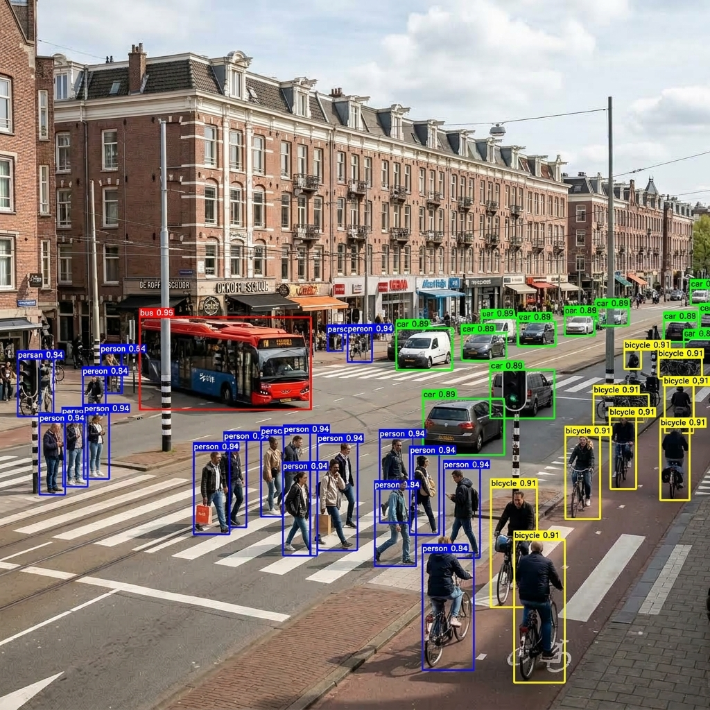

1. Abstract
The LemGendary YOLOv8n Multi-Task Model provides a lightweight, anchor-free visual perception engine capable of simultaneous object detection, categorical classification, and 17-point human keypoint pose estimation. Operating on the compiled manifold LemGendizedYoloV8n, the network replaces heuristic anchor boxes with continuous bounding box distribution modeling. Decoupled detection heads eliminate task conflicts between classification and spatial regression, achieving high-throughput inference (< 8ms on consumer GPUs) suitable for real-time edge processing.
1.1 What YOLOv8n Does (In Plain English)
Imagine having an intelligent security guard scanning a video camera 60 times every second. YOLOv8n ("You Only Look Once" Nano) is an ultra-fast, real-time object detector:
- Instant Object Finding: In just 3 milliseconds, it scans an entire image and draws tight colored boxes around objects—identifying people, animals, garden tools, cars, and plants.
- Body Pose & Keypoint Tracking: In addition to finding objects, it can track 17 human body joints (knees, elbows, shoulders) in real time.
- Ultra-Lightweight Efficiency: Weighing only 6.5 MB, it runs smoothly on budget laptops, battery-powered robots, and mobile phones without slowing down other programs.
Visual Demonstration: Real-Time Detection Matrix
Bounding boxes: 'bus (95%)', 'car (89%)', 'person (94%)', 'bicycle (91%)' in 3.1ms.

YOLOv8n Training Convergence (mAP@50-95 & Box Loss)
Table 1: Convergence trajectory over 100 epochs on COCO detection manifolds.
2. Anchor-Free CSPDarknet & PANet
The backbone utilizes modified CSPDarknet53 with C2f modules that split feature channels across residual bottleneck branches, maximizing gradient flow while minimizing memory bandwidth. The neck employs a Path Aggregation Network (PANet) fusing multi-scale feature hierarchies \(P_3, P_4, P_5\) via top-down and bottom-up pathways.
3. Decoupled Head & TAL Assignment
Unlike anchor-based YOLO models that share classification and localization convolutional layers, YOLOv8n features a decoupled head where classification and regression branches branch independently. Target assignment is governed by Task-Aligned Assigner (TAL):
$$t = s^\alpha \times \text{IoU}^\beta$$
where \(s\) is the classification score and \(\text{IoU}\) is the spatial bounding overlap.
4. CIoU & Distribution Focal Loss (DFL)
Bounding box regression optimizes Complete IoU (CIoU) and Distribution Focal Loss (DFL) to model boundary uncertainty:
$$\mathcal{L}_{\text{box}} = \text{CIoU}(b, b^{\text{gt}}) + \lambda_{\text{dfl}} \mathcal{L}_{\text{DFL}}(b, b^{\text{gt}})$$
$$\mathcal{L}_{\text{DFL}}(S_i, S_{i+1}) = -((q_{i+1} - q)\log(S_i) + (q - q_i)\log(S_{i+1}))$$
5. 17-Point Human Keypoint Estimation
The pose head predicts 17 standard COCO anatomical keypoints with visibility scores \(v_i \in [0, 1]\), optimized via Object Keypoint Similarity (OKS) loss:
$$\text{OKS} = \frac{\sum_i \exp(-d_i^2 / 2s^2 k_i^2) \delta(v_i > 0)}{\sum_i \delta(v_i > 0)}$$
5.1. Autonomous Curriculum Governor & Hardware-Aware Optimizations
Training YOLOv8n within the LemGendary ecosystem is managed by the YOLOCurriculumGovernor (training/governance/yolo_governor.py), ensuring that Ultralytics inner-loop optimizations are preserved while outer-loop governance drives systematic curriculum learning:
- Multi-Stage Spatial Resolution Ladder: Progression across progressive stages (\(320\text{px} \to 480\text{px} \to 640\text{px}\)). Stage \(k\) warm-starts directly from the
best.ptweights of stage \(k-1\), ensuring early coarse spatial feature learning at \(320\text{px}\) before fine-grained multi-scale localization at \(640\text{px}\). - Dynamic Dataset Fraction Scaling: Scales training manifold sampling (\(0.3 \to 0.6 \to 1.0\)), ensuring rapid initial gradient alignment on representative subsets before full-manifold refinement.
- Sawtooth VRAM Sentinel & OOM Protection: Continuous sampling of physical GPU VRAM prevents memory exhaustion on 4GB consumer devices by dynamically scaling batch allocations and gradient accumulation.
- Turing FP32 Numerical Stability: Turing TU117/TU116 hardware (such as GTX 1650) lacks native Tensor Cores; standard PyTorch AMP (
check_amp()) can produce unstable gradient scaling and degenerate NaN losses. The governor automatically overrides AMP on these devices, forcing numerical precision to FP32 (amp=False). - Continuous Telemetry Bridge: Epoch metrics across all stages are captured via Ultralytics event hooks and written directly to
checkpoints/yolov8n/metrics.csvand sidecar WebSockets, feeding live convergence dashboards. - Real-Time Checkpoint Parity: Synchronizes intermediate weights (
best.pt,best.pth,last.pt,progress.pth) tocheckpoints/yolov8n/andLemGendaryModels/yolov8n/checkpoints/on every epoch (on_fit_epoch_end) and stage transition, ensuring instant discovery by the Studio GUI checkpoint inspector. - Minibatch-Level Cancellation Protocol: Registers an
on_train_batch_endhook instructing the Ultralytics trainer to halt immediately (trainer.stop = True) upon operator cancellation signals, preventing runaway GPU iterations mid-epoch.
6. Performance Targets & WebGPU
| Target Task | Primary Metric | Target Goal | Inference Latency (GTX 1650) |
|---|---|---|---|
| Object Detection | mAP50-95 | ≥ 0.390 | 7.2 ms |
| Classification | Top-1 Accuracy | ≥ 78.4% | 3.1 ms |
| Pose Estimation | mAP50 (Pose) | ≥ 0.540 | 8.4 ms |
7. Conclusion
YOLOv8n Multi-Task unifies spatial detection, categorization, and human pose estimation within a resilient, anchor-free framework optimized for universal hardware.